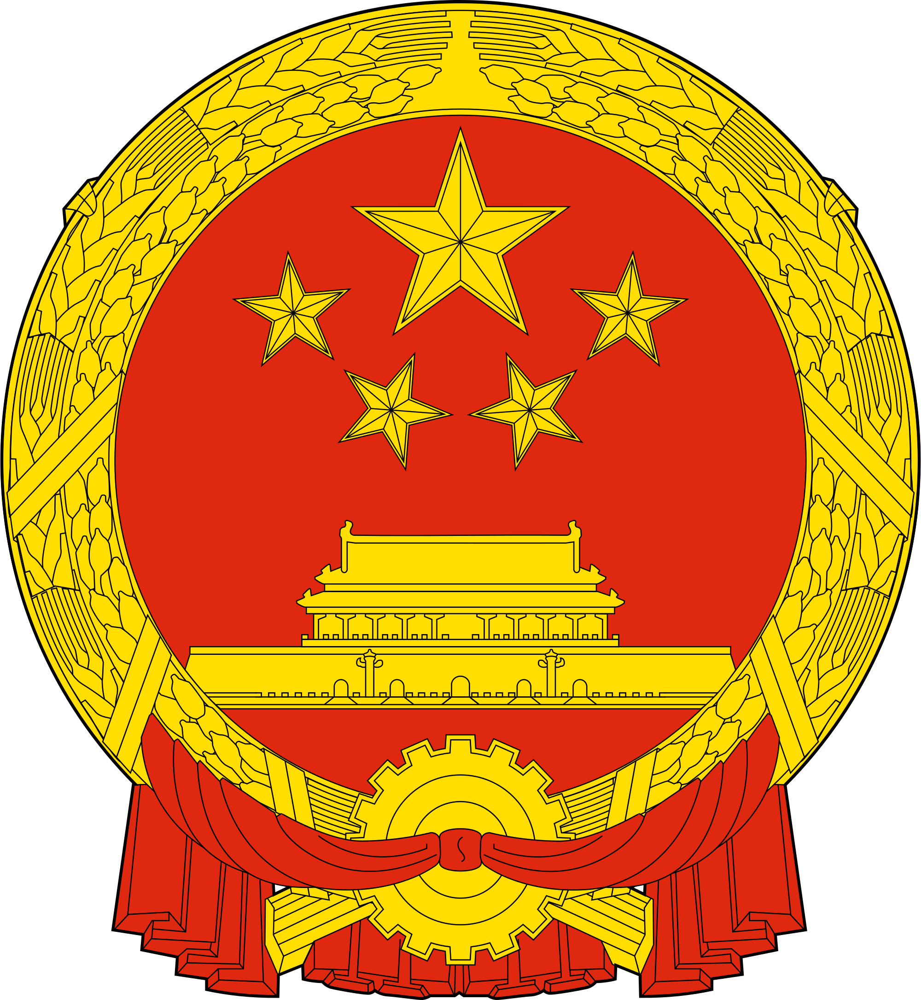

Flagge & Wappen
 Grundfarbe ist das kommunistische Rot, zugleich auch die Farbe der Han-Chinesen. Zudem gilt es in China als Glücksfarbe. Im linken oberen Eck ist ein großer fünfzackiger gelber Stern, der bogenförmig von vier kleineren Sternen umrahmt wird.
Der große Stern symbolisiert die Führung der kommunistischen Partei, die kleineren Sterne stehen für die vier Klassen:
1. Arbeiter,
2. Bauern,
3. Kleinbürger,
4. Unternehmer, die sich seit dem Krieg gegen Japan in den 30er und 40er Jahren auf die Seite der Kommunisten gestellt hatten.
Diese vier Begriffe kennzeichnete Mao Zedong in einer Rede aus dem Jahr 1949 als die vier Gruppierungen, aus denen sich das chinesische Volk zusammensetze.
Zudem hat die Zahl fünf auch eine traditionelle Bedeutung. Traditionell spricht man von fünf Herrschern, fünf Farben, fünf Elementen, fünf Tugenden, fünf Sorten und historisch von fünf Teilen Chinas.
Grundfarbe ist das kommunistische Rot, zugleich auch die Farbe der Han-Chinesen. Zudem gilt es in China als Glücksfarbe. Im linken oberen Eck ist ein großer fünfzackiger gelber Stern, der bogenförmig von vier kleineren Sternen umrahmt wird.
Der große Stern symbolisiert die Führung der kommunistischen Partei, die kleineren Sterne stehen für die vier Klassen:
1. Arbeiter,
2. Bauern,
3. Kleinbürger,
4. Unternehmer, die sich seit dem Krieg gegen Japan in den 30er und 40er Jahren auf die Seite der Kommunisten gestellt hatten.
Diese vier Begriffe kennzeichnete Mao Zedong in einer Rede aus dem Jahr 1949 als die vier Gruppierungen, aus denen sich das chinesische Volk zusammensetze.
Zudem hat die Zahl fünf auch eine traditionelle Bedeutung. Traditionell spricht man von fünf Herrschern, fünf Farben, fünf Elementen, fünf Tugenden, fünf Sorten und historisch von fünf Teilen Chinas.
Das Tor des Himmlischen Friedens ist der südliche Zugang zur Verbotenen Stadt, von dessen Balustrade aus Mao Zedong am 1. Oktober 1949 die Volksrepublik China ausrief. Der große Stern symbolisiert die Kommunistische Partei, die vier kleineren Sterne symbolisieren die „vier Klassen“ –Arbeiter, Bauernstand, Intellektuelle und die nationale Bourgeoisie – auf die sich die politische Macht der Volksrepublik China stützen soll. Die Anordnung der Sterne um den großen Stern, der die Mitte bildet, zeigt, dass sich die Einheit durch ein Zentrum bilden soll. Es gibt unterschiedliche Deutungen, wofür die vier Sterne stehen. So stehen laut „Fischer Weltalmanach 2006“ die vier kleinen Sterne für Arbeiter, Bauern, Kleinbürger und patriotische Kapitalisten. Die Originalbeschreibung des Gestalters der Flagge Zeng Liansong sieht hingegen die allgemeine Bourgeoisiedurch den vierten Stern repräsentiert. Die Ähren aus Weizen und Reis symbolisieren abermals die Bauern, das Zahnrad die Arbeiterschaft. Ein Hinweis auf die Intelligenz, wie zum Beispiel im Wappen der DDR durch den Zirkel, gibt es im Wappen der Volksrepublik China nicht.